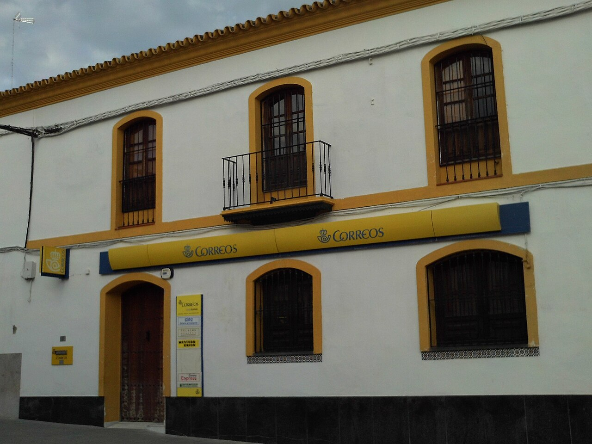

El cartero como banco
Con Correos Cash se puede sacar e ingresar dinero en las oficinas y pedir que un cartero rural lo lleve a casa. En 2022 Correos firmó un acuerdo con las asociaciones bancarias para ofrecerlo en 4.675 puntos de atención y con 6.000 carteros rurales, que llegan al 100 % de los municipios. Es una forma de combatir la exclusión financiera en la «España vaciada».
≈ 917.000operaciones a domicilio (pagos, envíos, efectivo) hicieron los carteros rurales con sus PDA en 2024.
CECA, nota de prensa de julio de 2022 · Corresponsables, operaciones rurales 2024
Foto: oficina de Correos en Aznalcóllar (Sevilla). CarlosVdeHabsburgo · CC BY-SA 4.0 · Wikimedia Commons